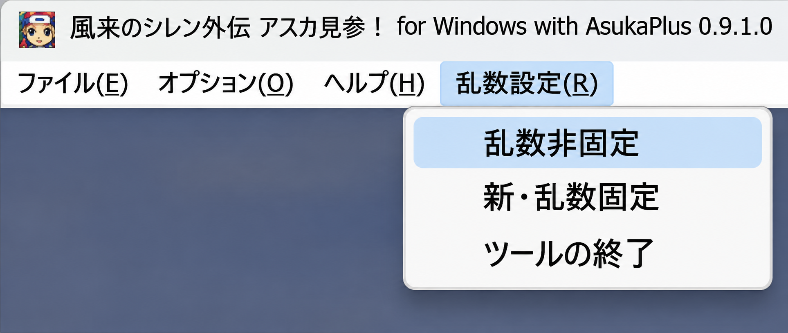

① メイン機能
乱数非固定機能
階段を降りるたびに乱数値をランダムに選び直します。フロアごとに新しい乱数値を使用し、見覚えのある展開を防止します。
SeedPlusは、ローグライクゲーム「不思議のダンジョン 風来のシレン外伝 女剣士アスカ見参!」（以下、アスカ見参）の乱数の挙動を制御するツールです。
階段を降りるたびに乱数値（シード値）を抽選し、フロアごとに新しい乱数値を使用した冒険を実現します。
Version 1.0.0 の取扱説明書に基づくご案内

アスカ見参では、ダンジョンに入ったときの乱数値（シード値）によって、1階から99階までのフロア構成（マップの形状、アイテム・モンスター・罠の配置など）が決まります。1階で決定されたシード値が、99階まで変わらない仕組みです。
そのため、見覚えのあるマップや展開に出会い、冒険の新鮮さが薄れてしまうことがありました。
SeedPlusは、階段を降りるたびにシード値をランダムに選び直すことで、ローグライクの魅力である「一生に一度の冒険」をアスカ見参でも楽しめるようにするために開発されました。
乱数制御機能は2つあり、メニューから簡単に切り替えられます。
階段を降りるたびに乱数値をランダムに選び直します。フロアごとに新しい乱数値を使用し、見覚えのある展開を防止します。
1階から99階まで同じ乱数値を使う、従来のアスカ見参と同じ方式ですが、乱数値の生成ロジックを改善しています。
従来のアスカ見参には、生成されやすい乱数値と生成されにくい乱数値があり、生成されない値もあります。
SeedPlusでは乱数生成ロジックを見直し、すべての乱数値の出現確率が極めて均等に近くなるよう改善しています。
従来はPC時刻をもとに乱数値を決めるため、プレイする時間帯によって乱数値に偏りが生じていました。
SeedPlusでは時刻への依存を解消し、24時間いつプレイしても、乱数値をほぼ均等な確率で抽選します。
※「乱数非固定機能」「新・乱数固定機能」の両方に反映されています
※かなりコアな内容で伝えづらいため、アスカ見参の乱数生成ロジックとその問題点の記事を書く予定です（時期未定）
先にゲームを起動してから、SeedPlus を起動してください。
任意のフォルダーに展開します。ZIP を開いたまま実行せず、展開した SeedPlus.exe を使用してください。
Windows版「女剣士アスカ見参！」（AsfPc.exe）を起動します。
SeedPlus.exe をダブルクリック。ゲームのメニューバーに「乱数設定（R）」が追加されます。
「乱数設定（R）」から「乱数非固定」または「新・乱数固定」を選びます。適用に成功すると、選んだ項目にチェックが付きます。
「乱数非固定機能」が正常に動作しているかどうかは、以下のいずれかの方法で確認できます。
AsukaToolsの乱数値表示機能を使用して、階段を降りるたびに乱数値が変わっていることを目視で確認します。
ダンジョンの途中（階段を降りるとき）にセーブしたデータをバックアップしておき、冒険を再開するたびにフロアの構成が変わっていることを確認します。
※レジストリエディターの操作が必要です。（解説は後日記述予定）
SeedPlusについてのご質問や不具合のご報告は、X（Twitter）の @mikan_fes までご連絡ください。
不具合をご報告いただく際は、使用しているツールのバージョンと、発生した状況を添えていただけると助かります。
X（Twitter）で問い合わせる ↗このホームページへのリンクは自由です。リンクを掲載する際の事前のご連絡や許可は必要ありません。
ブログやSNSなどで、自由にご紹介いただけます。
「女剣士アスカ見参！」Windows版向け